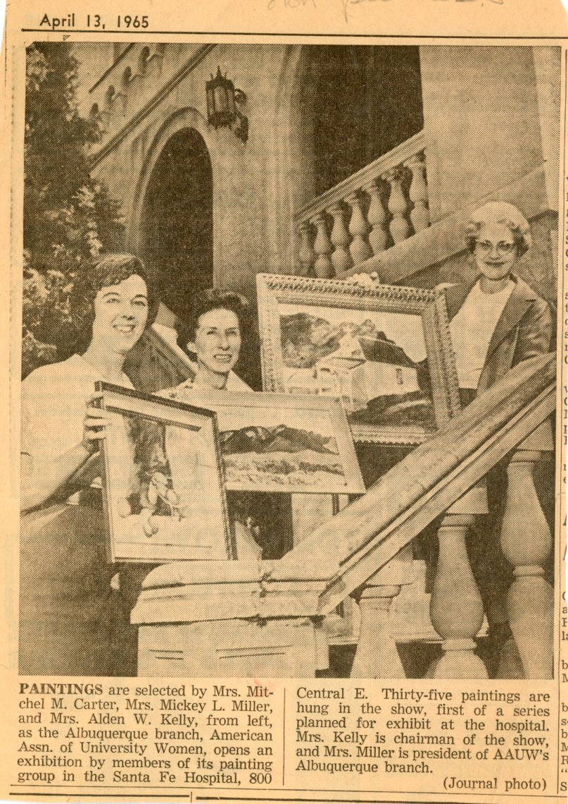
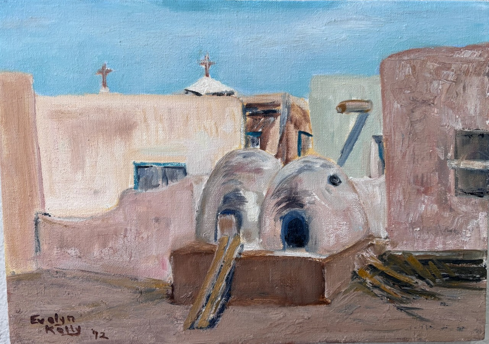
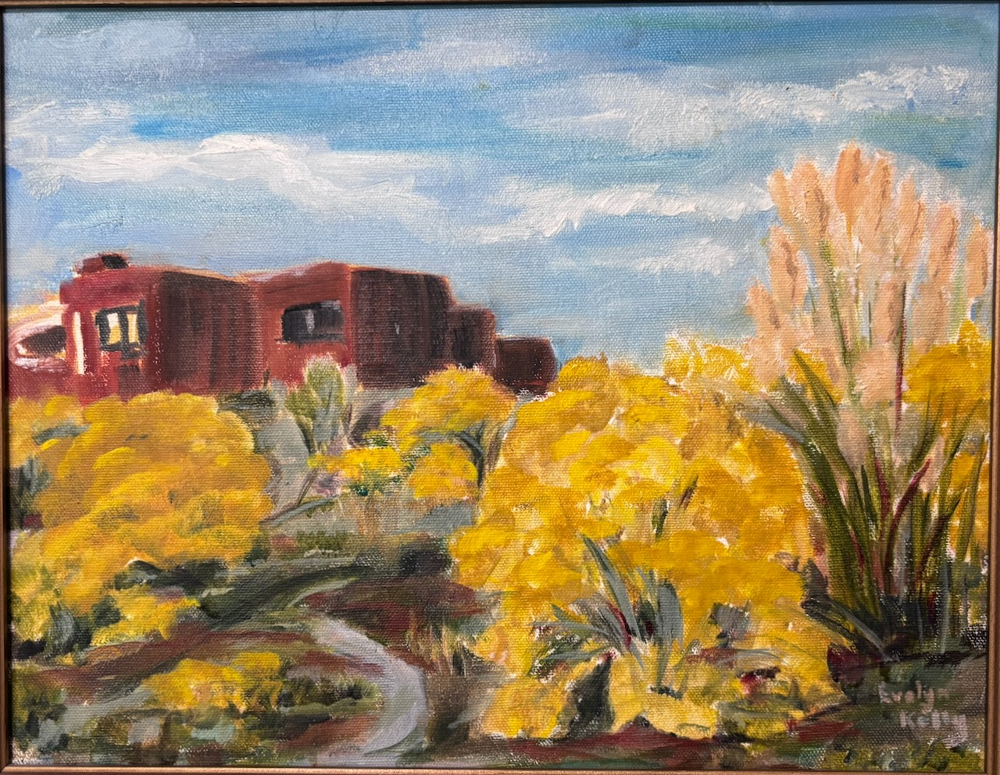
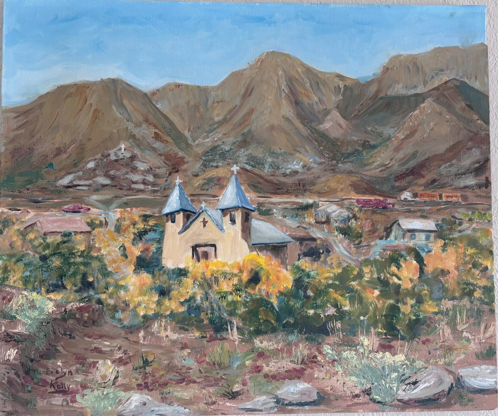
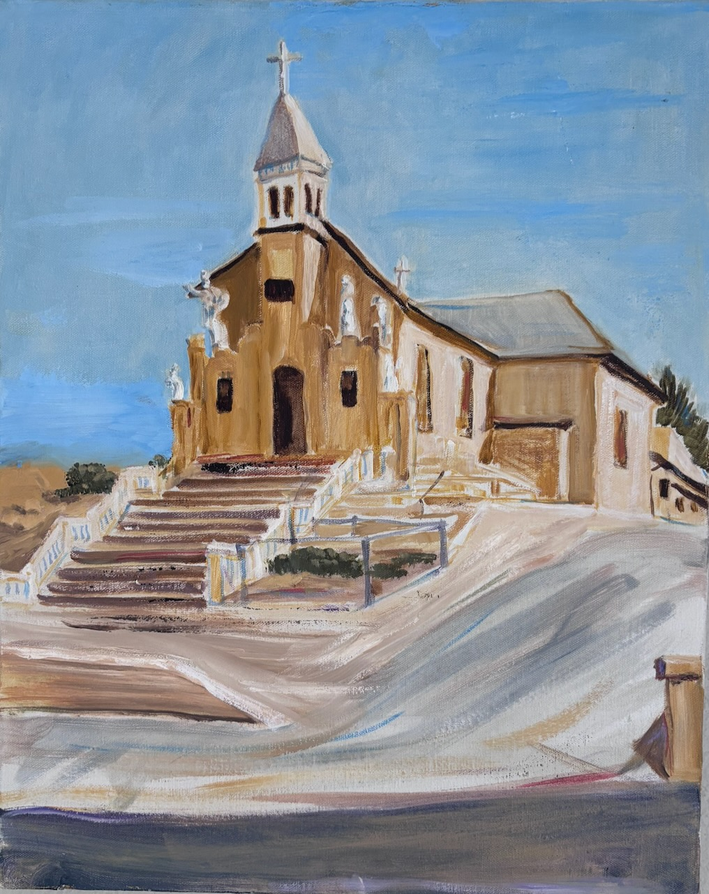
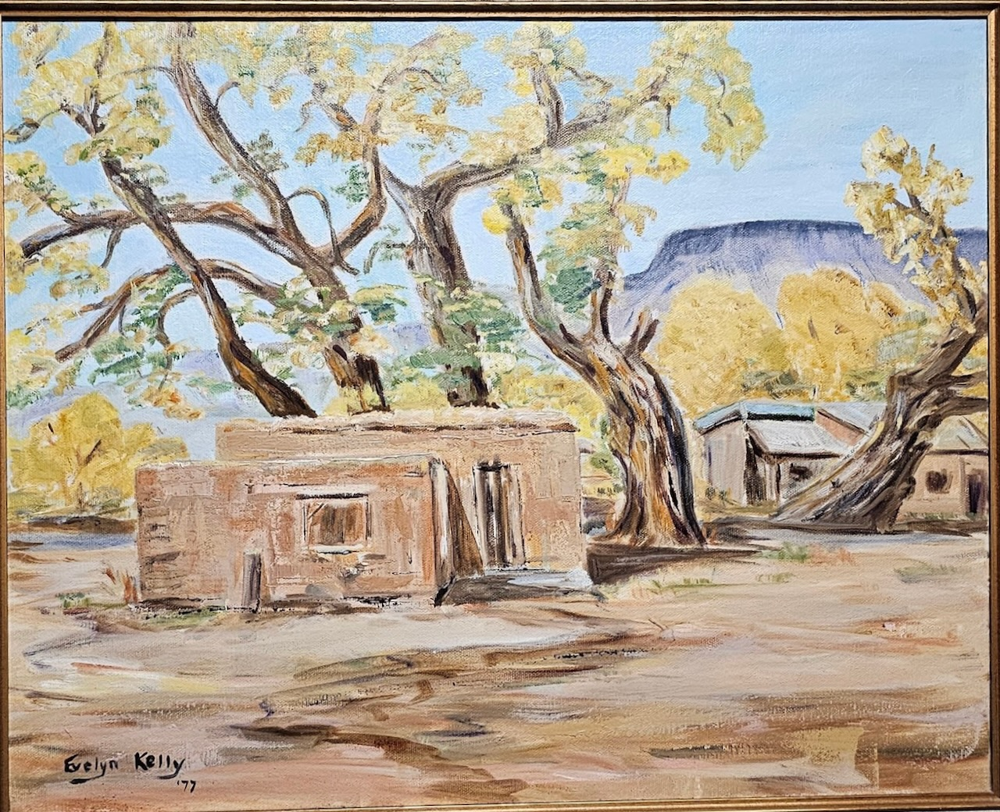
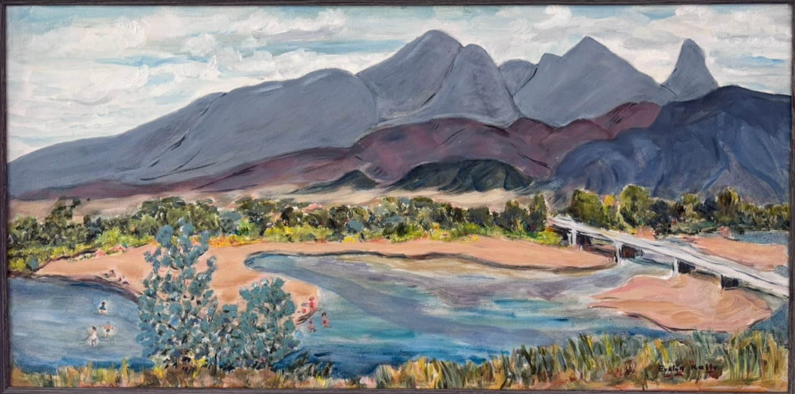

Evelyn Eugenia Napper Kelly -- Paintings

Newspaper clipping from Albuquerque Journal 1965

Isleta Pueblo, New Mexico ~ 1972

Placitas, New Mexico~ 1973

Church in the East Mountains Tijeras Canyon, New Mexico ~ 1973

Church on Edith Blvd in Martinez Town, Albuquerque, New Mexico ~ 1975

House near Ghost Ranch with Perdernal Peak in the Background, New Mexico -- 1977

Near Coronodo Monument north of Bernalillo NM on the west side of the Rio Grande looking east ~ 1978